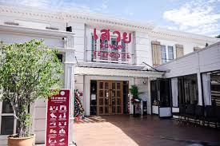
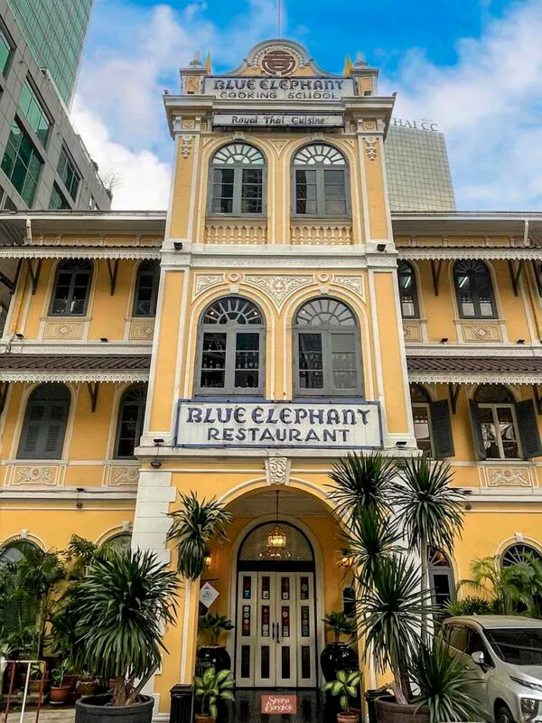
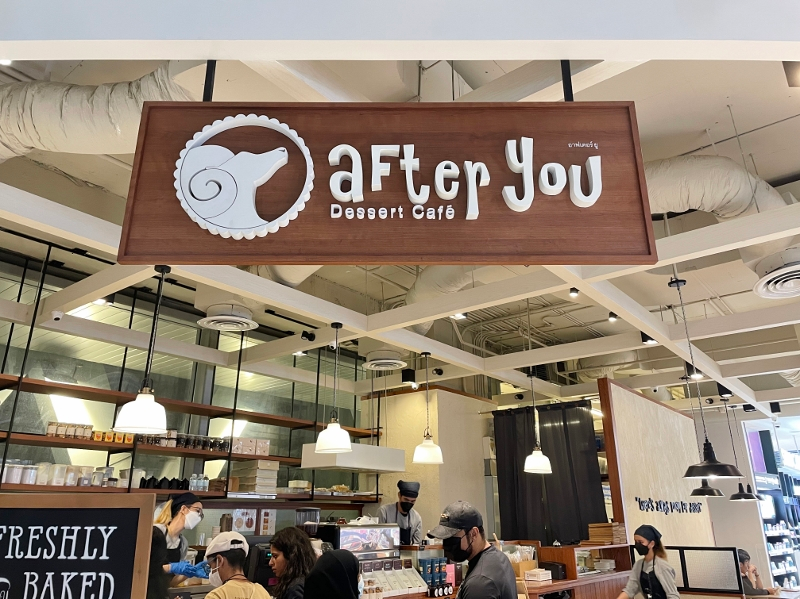

ร้านอาหารแนะนำในกรุงเทพมหานคร

เจ๊ไฝ ประตูผี
ร้านสตรีทฟู้ดระดับมิชลิน เมนูเด็ดคือไข่เจียวปูและผัดขี้เมาทะเล
ทิพย์สมัย ผัดไทยประตูผี
ร้านผัดไทยชื่อดัง เส้นเหนียวนุ่ม หอมมันกุ้ง เป็นตำนานของกรุงเทพ

เสวย ซีฟู้ด
ร้านอาหารทะเลคุณภาพ วัตถุดิบสดใหม่ รสชาติมาตรฐานระดับพรีเมียม

Blue Elephant
อาหารไทยชาววัง บรรยากาศหรูหรา ตั้งอยู่ในอาคารประวัติศาสตร์

สตรีทฟู้ดเยาวราช
แหล่งรวมอาหารกลางคืนชื่อดังของกรุงเทพ เต็มไปด้วยร้านเด็ดระดับตำนาน

After You Dessert Café
คาเฟ่ของหวานชื่อดัง เมนูฮันนี่โทสต์และชิบูย่าฮันนี่โทสต์